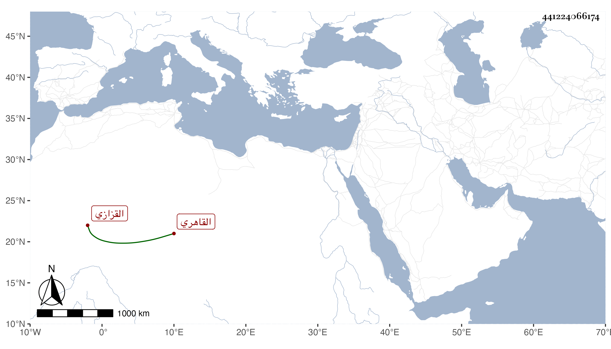

0902Sakhawi.DawLamic.ITO20230111-ara1.EIS1600.441224066174
Biography ID: 441224066174
161
محمد بن عبد الله بن أحمد بن علي بن محمد بن قاسم الشمس بن الجمال بن الحافظ الشهاب القاهري القزازي أخو إبراهيم الماضي ويعرف كسلفه بالعرياني . ولد تقريبا سنة ثمان وثمانمائة ، كان من بيت حديث ورواية ولكن ما علمت له سماعا ولا إجازة نعم سمع وهو كبير معنا على بعض الشيوخ يسيرا واشتغل بالتكسب في الزجاج بحانوت بالوراقين وكان صوفيا في سعيد السعداء . مات في المحرم سنة تسع وسبعين بعد تعلله بالفالج مدة . عفا الله عنه .
